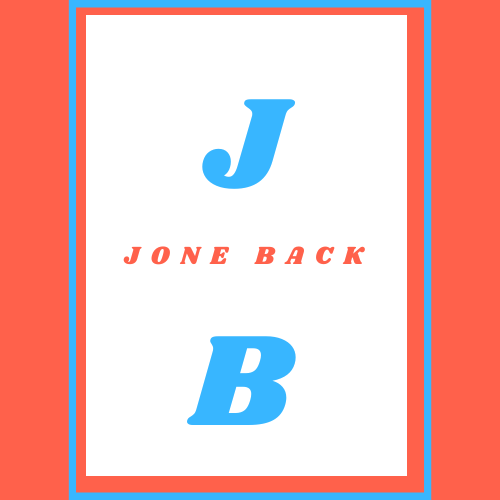

I developed an HTML, CSS, and JavaScript application that generates random jokes
based on user input. The application
uses a list to capture user preferences and selects a random number to index an
object of words and phrases. This
produces a humorous sentence, known as a "jone," targeting specific characteristics
of a person. The app caters to
individuals with limited joneining skills, providing an interactive and
user-friendly experience. It showcases my
proficiency in web development and highlights my ability to create engaging software
solutions.

Why its useful
The "Jone Back" app provides an entertaining and interactive Mad Libs-style game
that generates random jokes
based on user input, offering a fun and witty experience.
Users can use the app to respond with their own witty comebacks, empowering
individuals who are being roasted
and promoting a positive and inclusive environment.
The app serves as an icebreaker in social gatherings, team-building activities,
and other events, fostering
conversation, laughter, and bonding among participants.
By allowing users to practice their joneining skills and experiment with
different joke combinations, the app
helps individuals enhance their wit and creativity.
As an educational tool, the app facilitates learning about language, humor, and
wordplay, expanding users'
vocabulary and promoting linguistic creativity.